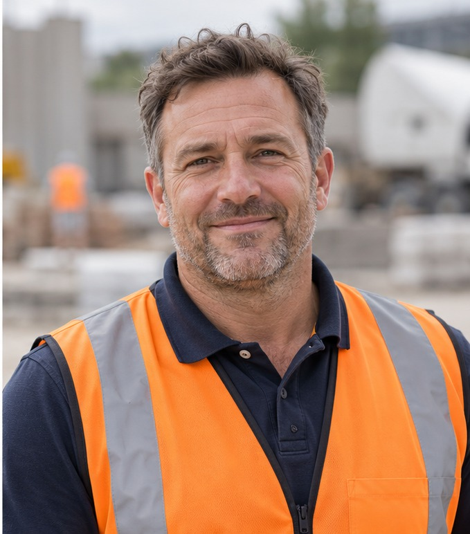

Manual lead follow-up
Lists, dialling, call outcomes and next actions demand effort.
Holcim | IPI
From the first project enquiry to informed advice and a clear next step. Three scenarios show how context, people and AI assistance can work together.
Two people. Three project scenarios. An AVA enquiry demo.
Follow the conversation
Capture the need and keep the context.
Bring relevant guidance into the conversation.
Explore the wider need and capture the outcome.
Introduction
Connect inbound service, outbound follow-up and virtual assistants in one contact centre.
AI helps advisers find relevant guidance, retain customer context and complete after-contact work, while supporting confident discussions about less familiar products.
Customers spend less time repeating information and receive advice that reflects their needs, with a clearer next step and more consistent follow-up.
What we’ve heard
A connected journey can make it easier for customers to get an answer and for advisers to deliver consistent support.
Lists, dialling, call outcomes and next actions demand effort.
Advisers need the right project details when a contact arrives.
Copying interaction details into business systems slows wrap-up.
Trusted guidance helps advisers deliver a consistent service and confidently recommend complementary products that fit the customer’s project.
How Genesys helps
Genesys Agent Copilot
Surface product guidance and discovery prompts in the adviser’s workspace as the conversation develops. Repeatable checklists help advisers cover the right questions and support coaching.
Give advisers a starting point for after-contact records, with a summary of the conversation and suggested outcomes ready for review.
Outbound campaigns
Automate lead dialling, manage retries and track outcomes. Blend follow-up with inbound work, prioritising inbound demand to protect service levels while keeping leads visible until the next action is clear.
Bots and AVA
Collect and confirm project details up front, handle corrections and pass the context to an adviser. The adviser can pick up the enquiry without asking the customer to start again.
Product references: Agent Copilot / Outbound planning and blending
Meet the people
Jamie brings the project. Emily brings the advice and a clear next step.

The customer
Project Manager
Riverside Construction
Jamie manages construction projects, including a residential extension, a logistics yard and council road works. He needs useful material advice that keeps each job moving.
“Help me get the right materials and keep each job moving.”
The adviser
Holcim Sales Adviser
Josh’s team
Emily follows up website enquiries. She needs lead context, relevant material guidance and less time updating records, so she can focus on the whole project.
“I want to understand the whole project, then agree a clear next step.”
Fictional demo characters.
Choose a demo
Choose a project scenario or explore how AVA captures an enquiry before the adviser joins.
A concrete and driveway enquiry becomes a guided conversation about the wider residential project.
A website enquiry carries project details into Genesys and an informed agent callback.
Explore a council road enquiry by voice or Web Messenger, with lower-carbon material guidance and a quotation follow-up.
Hear AVA gather Jamie’s project details and recognise when an adviser should take over.
Captured demo workflows. Voice recordings use prepared audio. Web Messenger is a recorded text conversation.
The outcomes
Managed follow-up keeps every enquiry visible. Customers receive timely contact, with a clear next action for the team.
Advisers start with the project details already in view. Customers spend less time repeating themselves and more time getting useful advice.
Suggested summaries and wrap-up codes reduce the effort of completing records. Advisers have more time for the next customer.
Relevant knowledge and repeatable checklists support consistent discovery. Advisers build confidence and give more consistent advice.